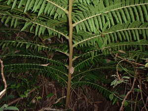
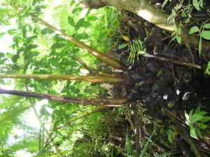

maneba  
/manɔba/
n.
a large plants which like a fern
Ka seini ne pinamula amana ne dakel ka lebut ne egpanggahalawan te me batè ne egsaliliren diyè te me masandig ne me lugar.
Due maneba diyè ta beuhan te kamet ku ne amana ne bubuyahen.
There's a big Maneba plants which like a fern leaves that grows in my field along the creek.
Eng. plant
OCM: Flora (137)
DDP: Plant (1.5)
Online dict status: -
Usage level: R
Created: 20/May/2009
Updated by: QDL
Last updated: 13/Oct/2009
This page last updated: 19/May/2012
Copyright © 2009-2010, Matigsalug Language Christian Association, Inc